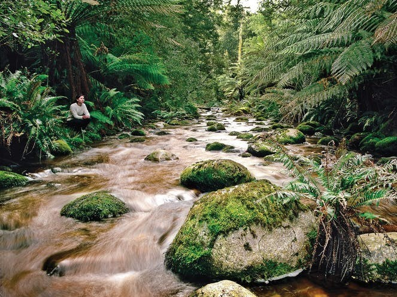

KUAKATA
Sunrise-View
kuakata known as Sagar Kannya (Daughter of the Sea) is a rare scenic beauty spot on the southernmost tip of Bangladesh. Kuakata in Latachapli union of Patuakhali district is about 30 km in length and 6 km.Kuakata is one of the rarest places which has the unique beauty of offering the full view of the rising
Fatera-Chor
Fatra’s chor is the nice tourist place near Kuakata beach. From Kuakata traveler may visit the Fatrar Chor. Fatrar Chor is the part of the Sundarban forest. Fatrar Chor is also known as Fatrar Bon. As the Fatrar Chor is the part of Sundarban so it is mangrove forest. Fatrar Bon is fairly big forest in Kuakata.
Lebur-Chor
Lebur chor is located at five (5) kilometer east of Kuakata beach. Lebur (Lemon) chor is locally also known as Lembur chor or ‘Nembur chor’.
Surrounded area of this chor is about 1000 acres. There are many types of trees and plants in this chor like Keura, Geowa, Goran, Koroi, Golpata etc.
Lebur chor is the part of Sundarban but now it is detached from Sundarban. It is situated in the east corner of Kuakata.
Shutki-Polli
Shutki polli is another place at Kuakata where tourist can visit. It is located 4 kilometer west from Kuakata beach.
On the way of Lebur bon/Lebur chor one can visit shutki polli. From that place one can get the experience of how to make dry fish (shutki).
He will see the full process of making dry fish. Fisherman catches many types of fish from the sea. They sell some fresh fish and rest of the fish is use to make dry.
There are varieties of fish process here. From shutki
Narikel Bagan, Kuakata
Narikel Bagan (Coconut Garden) is the nice place to visit for Kuakata travelers. It is situated at the eastern side of the sea beach. It is not very far distance from Kuakata beach. So traveler can reach there easily by walking. According to the local people these coconut garden is more than 40 years old. There are lots of coconut trees in that area.
Narikel bagan was formed with large area in the side of the sea
Keranipara Seema Mandir
Keranipara is nearest Rakhine village from the Kuakata beach. Travelers may visit the 100 years old Buddhist temple at keranipara named as Seema Mandir. Seema Mandir is made by eight different metals.
Traveler should to put off their shoes before entire the temple. Everyday many tourists come to visit the temple to have a look at the statue of Buddha. Kuakata is now a holy destination to the devotees. Many devotees arrive here during the festivals of Rash Purnima and Maghi Purnima.

Gangamati Reserved Forest
Gangamati Reserved Forest is an evergreen mangrove forest in the Kuakata Patuakhali Bangladesh. It is located on the eastern end of the beach of Kuakata. Distance from Gangamati Reserved Forest to Sundarban is one hour by speedboat.
The best way to reach the Gangamati Reserved Forest is by foot or bike along the beach
Misripara Buddhist Temple
Kuakata Buddhist Temple is situated only four (4) kilometer away from Kuakata beach. Traveler may visit there by any vehicles. Kuakata Buddhist Statue is the biggest Buddhist Statue in South Asia. If a traveler visits Buddhist Temple he will see the statue of Goutom Buddha and also he will see the 200 years old wells.
Traveler will find the about hundred year’s old ancient tradition and cultural heritage of traditional Rakhyne tribal families and Buddhist Temple
.
Sunset-View
sunset view from the same beach. To enjoy the sunrise from the Kuakata beach one should wake up very early in the morning. At the evening of the day traveler will enjoy the attractive sunset.
The excellent sandy beach of Kuakata fascinates thousands of tourists to watch both Sunset and Sunrise on Sea.
This pleasant environment is often visited by tourists who also make a trip to another surrounding destination.
Kuakata is an eye-catching sea beach on the southern most part of Bangladesh.
The long and wide beach at Kuakata has beautiful natural scenery.